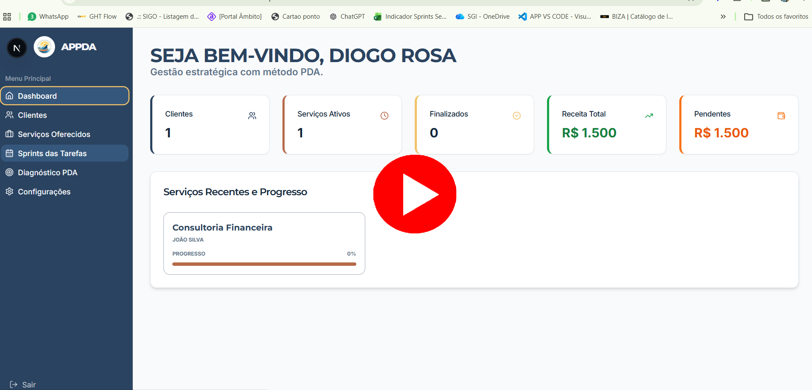

Avaliações no Google
Adesivos e tags que abrem o link de avaliação do seu negócio por aproximação em celulares compatíveis. QR Code como alternativa de acesso.
Consultar soluçãoDo digital à operação, conectamos competências para ajudar sua empresa a avançar com clareza.
Um site precisa explicar o seu negócio e facilitar o próximo passo do cliente. Escolhemos o formato a partir da sua oferta, do conteúdo e do objetivo comercial. Desenvolvemos para empresas de São José dos Pinhais, Curitiba e todo o Brasil.
Ajudamos sua empresa a apresentar informações completas e coerentes para quem busca seus serviços. O trabalho conecta o Perfil da Empresa no Google, o site e a realidade do atendimento, sem promessas de posição garantida.
A campanha começa com uma oferta compreensível, um público definido e uma operação capaz de atender. Planejamos a presença nos canais, produzimos conteúdo e acompanhamos o que acontece depois do clique.
Quando informações ficam espalhadas e tarefas se repetem, a tecnologia pode ajudar. Entendemos a rotina antes de propor automações, integrações e sistemas, com funcionalidades definidas para o seu contexto.
Uma base sólida permite aproveitar melhor as oportunidades. Investigamos gargalos, organizamos rotinas e definimos indicadores que apoiem decisões. Para desafios mais amplos, o Método PDA orienta ciclos de execução e acompanhamento.
Também construímos junto com empresas e fornecedores. A PDA apoia a transformação de uma necessidade em um projeto viável, conectando pesquisa, organização, tecnologia e parceiros. Escopo, testes e responsabilidades são definidos para cada desenvolvimento.
Soluções físicas e digitais que aproximam pessoas, organizam informações e facilitam o dia a dia.
Adesivos e tags que abrem o link de avaliação do seu negócio por aproximação em celulares compatíveis. QR Code como alternativa de acesso.
Consultar soluçãoUma forma prática de levar quem visita sua loja ou recebe seu atendimento ao perfil da empresa.
Consultar soluçãoTags para iniciar uma conversa, compartilhar contato ou abrir um endereço digital definido para sua aplicação.
Consultar soluçãoDuas ações organizadas em uma peça: avaliar a experiência ou conhecer o perfil da empresa.
Consultar soluçãoSua oferta em um endereço próprio: apresentação institucional, catálogo comercial ou página de campanha.
Consultar soluçãoUm ponto de partida para entender o problema, definir o alvo e organizar a execução com acompanhamento.
Consultar soluçãoSoluções NFC desenvolvidas pela PDA. Google, Instagram e WhatsApp são plataformas independentes. Configuração, compatibilidade e aplicação são avaliadas no atendimento.
Clientes, serviços, tarefas, despesas e resultados em um sistema pensado para prestadores de serviços e pequenas empresas.

Uma ideia de produto, uma demanda de um fornecedor ou uma oportunidade de negócio pode precisar de várias competências. A PDA ajuda a estruturar o projeto e conectar as partes, do conceito aos testes e à apresentação comercial.
Conversar sobre uma parceria